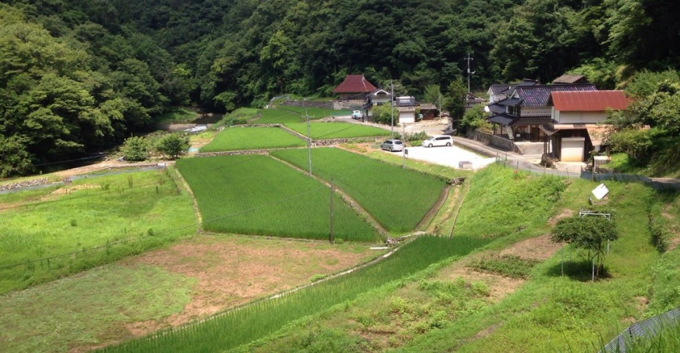
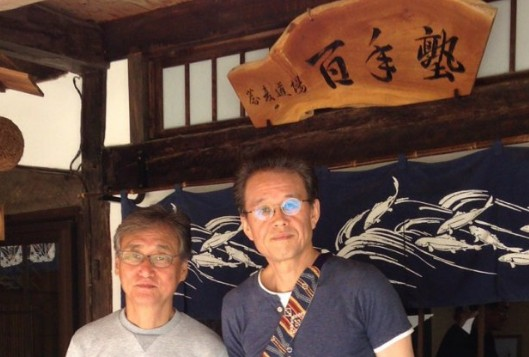
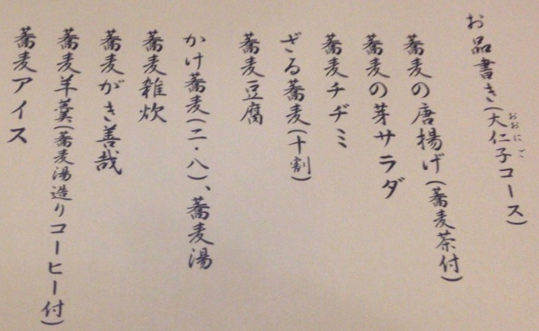

久しぶりに行きました。
岡山の山の中に有る蕎麦の塾「百年塾」へ行ってきました。

ここへは7-8年前から何度が訪問しているが、行く度に多くの学びがある。
今回は、蕎麦を玄そばから製粉する臼について驚きました。
そば粉が変われば味が変わりますが、臼が違えば味も違うと言うこと。
当たり前と言えば当たり前ですが、そのことを意識していませんでした。
珈琲もミルが変われば、味が変わることを経験から知っていましたし、実際にミルの研究もやってきました。
珈琲の場合は、高速回転でカットするか、磨りつぶすの違いで大きく違ってきます。微粉の量によっても変わってきます。
良く知られているのは回転による熱によっても変わってくると言うこと。
蕎麦は、この熱をとても嫌うので、ゆっくりと挽くが回転数や臼の溝の違いなどを考えると、無限に有る。あらびきや細引きは口当たりにも影響するし、蕎麦の味わい方を突き詰めると蕎麦の産地にそして自作になるんだうなと思う。
さて、今回は、7月20日から広島蕎麦人という蕎麦屋を始めた友達と一緒に行ったきました。

友達とは、現地集合でしたが遅刻しないか心配でした。
百年塾は、遅刻厳禁。
そば塾の塾長は、「ここは蕎麦屋じゃない」と言い切ります。
プロにできないことをするアマチュアだと。
アマチュアにもできないことをやってると思います。
見方によっては、変わっていると思われたり、高飛車に感じると思う。
私は、そんなことより蕎麦に興味深々で、何を得て帰ろうか見えないものを見るかのように、耳と目と鼻、五感六感を使って違いや何故そうなるのか自分自身に質問を投げかけています。
今回頂いたのは蕎麦のフルコース。

全部で10品。
一部を紹介するとこんな感じです。

珈琲も極めれば奥が深いが、蕎麦も深い。
何事も極めるには長い道のりですね。
まだまだ、駆け出しの珈琲ですが、
「美味しく淹れるために何ができるだろうか？」
自問の日々です。